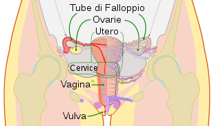

APPARATO RIPRODUTTIVO FEMMINILE
L'apparato genitale femminile, negli organismi anfigonici è l'insieme degli organi e delle strutture che permettono la riproduzione e l'accoppiamento negli animali femminili.
Maschi e femmine evolvono da un essere comune asessuato/ermafrodita dotato di genitali esterni di tipo femminile con un relativamente ampio clitoride. Nel maschio le labbra minori e quelle maggiori si fondono per formare lo scroto. Il vestibolo del clitoride si allunga e forma il pene. Nella donna la crescita delle piccole labbra e grandi labbra è molto superiore all'evoluzione del clitoride, che rimane di dimensioni ridotte.
